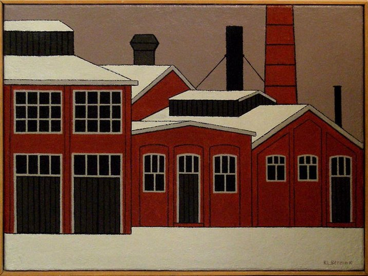

5. Oude gasfabriek

Schilderij door Klaas Bernink (polymeerverf, jaar onbekend) In dit schilderij laat Bernink de ruïne zien van de oude gasfabriek van Enschede. Deze fabriek produceerde in de late 19e en vroege 20e eeuw gas uit kolen, bedoeld voor straatverlichting en voor gebruik in de industrie. Halverwege de 20e eeuw verloor het gebouw zijn functie, omdat de stad overstapte op een elektrisch netwerk. De fabriek raakte in verval en bleef als stille herinnering aan een industrieel verleden achter. Bernink schildert de fabriek in zijn herkenbare stijl. Hij werkt met strakke kleurvlakken en donkere lijnen die de vormen duidelijk omlijsten. De grote hallen, schoorstenen en beschadigde gevels worden teruggebracht tot eenvoudige, krachtige vormen. De sfeer is rustig en leeg: er zijn geen mensen te zien, alleen de stille restanten van een tijd waarin industrie het stadsbeeld bepaalde. Bernink koos dit onderwerp omdat de ruïne het einde van een industrieel tijdperk laat zien. Hij zag schoonheid in het verval: de heldere vormen, de ritmiek van de gebouwen en de sterke kleurcontrasten. Het past ook bij zijn interesse in Twentse architectuur die ooit functioneel was, maar nu vooral historische betekenis heeft. In dit schilderij verandert hij een verlaten fabriek in een ingetogen monument, een eerbetoon aan de geschiedenis van de stad.